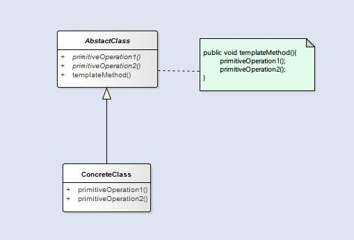

模板方法模式
文章目录
模板方法模式 定义了一个算法的骨架，并允许子类别为一个或多个步骤提供其实践方式。让子类别在不改变算法架构的情况下，重新定义算法中的某些步骤。
模板就是一个方法，这个方法将算法定义成一组步骤，其中的任何步骤都可以是抽象的，由子类负责实现。这可以确保算法的结构保持不变，同时子类提供部分实现。下面是模板类的一个示例。
abstract class Game {
private int playersCount;
abstract void initializeGame();
abstract void makePlay(int player);
abstract boolean endOfGame();
abstract void printWinner();
/* 钩子方法 */
boolean justOnce() {
return false;
}
/* 模板方法 */
final void playGame(int playersCount) {
for (int i = 0; i < 3; i++) {
this.playersCount = playersCount;
initializeGame();
int j = 0;
while (!endOfGame()) {
makePlay(j);
j = (j + 1) % playersCount;
}
printWinner();
if (justOnce())
break;
}
}
}
在使用模板方法的时候，我们还可以采用钩子(hook)方法来对算法的某些步骤进行控制。在上面代码中的第14行就是一个hook方法，它提供了一个默认的实现，子类可以覆盖这个方法来控制模板方法的流程。
结构

在图中的抽象类包含了模板方法，通过抽象的方式将模板方法和具体操作之间解耦。通常我们会将模板方法设置为final这样可以防止子类修改。
在Java API中也有许多模板方法的使用，比如：
Comparable接口，这个接口可以实现自定义的排序。
模板方法和策略模式
- 策略模式使用的是对象组合，所以更具有弹性，客户端可以根据需求更换。
- 在策略模式中，所组合的类实现了整个算法，而模板方法模式只是让子类实现部分的算法。
- 模板方法模式对算法有更多的控制权，而且重用的代码更多。
- 策略模式和模板方法模式都是封装算法，一个用组合，一个用继承。
Tip:工厂方法模式是模板方法的一种特殊版本。